-
El siguiente documento XML ("perifericos.xml") está bien formado. Sin embargo, no es válido. Para que lo sea, realizar los cambios necesarios en dicho documento, pero sin modificar la DTD interna.
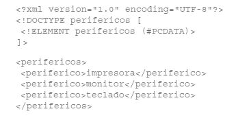 Ver resolución -
El siguiente documento XML ("perro.xml") está bien formado. Sin embargo, no es válido. Para que lo sea, realizar los cambios necesarios en dicho documento, pero sin modificar la DTD interna.
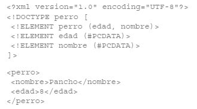 Ver resolución -
El siguiente documento XML ("caballo.xml") está bien formado. Sin embargo, no es válido. Para que lo sea, realizar los cambios necesarios en dicho documento, pero sin modificar la DTD interna.
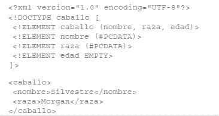 Ver resolución -
El siguiente documento XML ("mesa.xml") está bien formado. Sin embargo, no es válido. Para que lo sea, realizar los cambios necesarios en dicho documento, pero sin modificar la DTD interna.
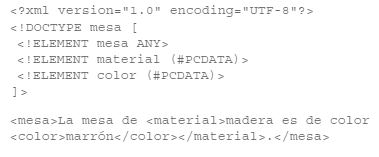 Ver resolución -
El siguiente documento XML ("partes.xml") está bien formado. Sin embargo, no es válido. Para que lo sea, realizar los cambios necesarios en dicho documento, pero sin modificar la DTD interna.
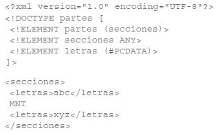 Ver resolución -
El siguiente documento XML ("viajes.xml") está bien formado. Sin embargo, no es válido. Para que lo sea, realizar los cambios necesarios en dicho documento, pero sin modificar la DTD interna.
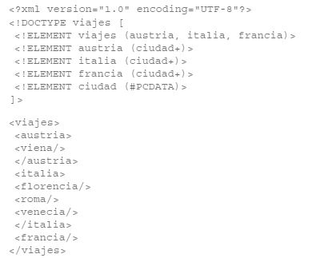 Ver resolución -
El siguiente documento XML ("ropa.xml") está bien formado. Sin embargo, no es válido. Para que lo sea, realizar los cambios necesarios en dicho documento, pero sin modificar la DTD interna.
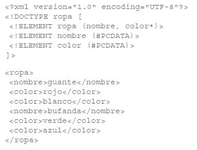 Ver resolución -
El siguiente documento XML ("productos.xml") está bien formado. Sin embargo, no es válido. Para que lo sea, realizar los cambios necesarios en dicho documento, pero sin modificar la DTD interna.
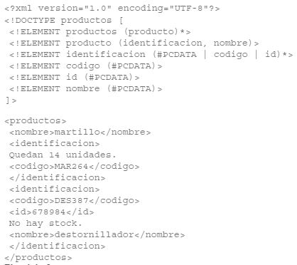 Ver resolución -
El siguiente documento XML ("forma_geometrica.xml") está bien formado. Sin embargo, no es válido. Para que lo sea, realizar los cambios necesarios en dicho documento, pero sin modificar la DTD interna.
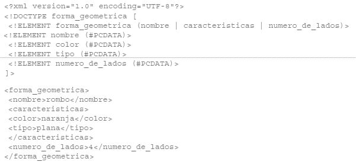 Ver resolución -
El siguiente documento XML ("lugares.xml") está bien formado. Sin embargo, no es válido. Para que lo sea, realizar los cambios necesarios en dicho documento, pero sin modificar la DTD interna.
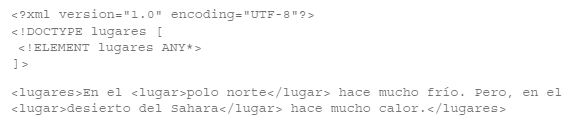 Ver resolución -
El siguiente documento XML ("ciudades.xml") está bien formado. Sin embargo, no es válido. Para que lo sea, realizar los cambios necesarios en dicho documento, pero sin modificar la DTD interna.
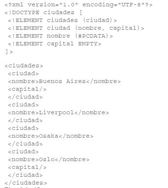 Ver resolución -
El siguiente documento XML ("socios.xml") está bien formado. Sin embargo, no es válido. Para que lo sea, realizar los cambios necesarios en dicho documento, pero sin modificar la DTD interna.
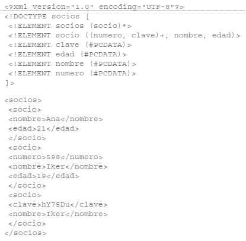 Ver resolución -
El siguiente documento XML ("elementos.xml") está bien formado. Sin embargo, no es válido. Para que lo sea, realizar los cambios necesarios en dicho documento, pero sin modificar la DTD interna.
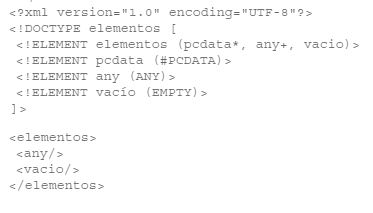 Ver resolución